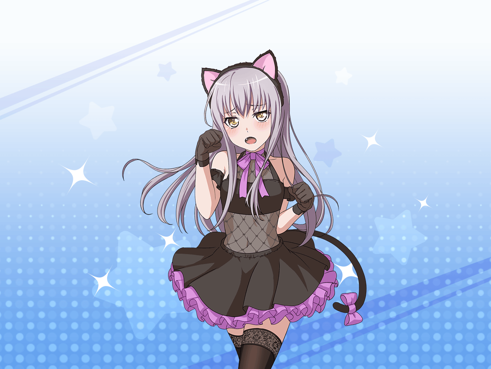

CiRCLE ロビー
友希那
…………
友希那
……こんにちは、{{userName}}さん。
ええ、今日は個人練習でスタジオに来ているの
友希那
…………？
疲れてないかって？
そんなことないわよ
友希那
そう見えると言われても……
別に無理な練習はしていないわ
友希那
ただ、そうね……疲れることがあったのは確かだわ。
そのことは忘れたいくらいよ
友希那
それは……先日、あこに誘われて
ハロウィンイベントに参加することになったの
友希那
……イベントの詳細は伏せるわ。
とにかく、疲れてるように見えたのなら、
それが原因ね
友希那
慣れないことをするのは、
とても難しいわ
友希那
私は、歌うことだけを考えているから……
歌うこと以外は慣れていないの。
だから、とても大変だったわ
友希那
あこは、はしゃいでいたけれど。
仮装して、張り切って……
イベントの最中は振り回されてばかりだったわね
友希那
ええ、私も仮装するはめになったわ。
私の仮装が気になる？ ……それは、言う必要ないわ。
とにかく、そのイベントが大変だったということよ
友希那
私は結局、そのイベントを歌うことでしか
解決することができなかったの
友希那
結果的に、私の歌は功を奏した……
そう思っているわ
友希那
私は歌っている時が一番私らしくいられるし、
歌があったからこそ、あのイベントを乗り越えられた
友希那
そして、これまでも歌のおかげで、
色々なことに向き合えてきたわ
友希那
だからこそ、これからも歌を裏切りたくないの。
疲れてる、なんて言い訳で
個人練習の手を抜いたりもしない
友希那
私は今後も歌に対して恥ずかしくないように
成長を続けていくつもりよ。
私の夢は変わらないから
友希那
……少し、話しすぎてしまったわね。
予定していた休憩時間を過ぎてしまったわ
友希那
それでは失礼するわね、私はスタジオへ戻るわ